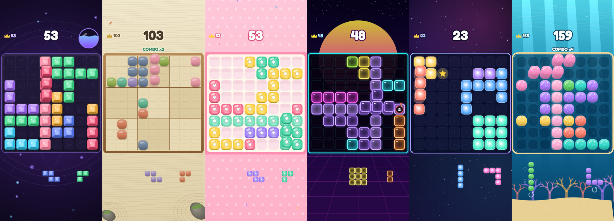

Seis modelos para escolher
Todos usam o mesmo núcleo de quebra-cabeça de blocos: bandeja com 3 peças, arrastar e encaixar, linha ou coluna cheia limpa, sequência de limpezas multiplica os pontos, fim quando nenhuma peça cabe. Cada modelo junta um tema visual a uma mecânica extra que muda a jogada. Todos são jogáveis.

- Jogar abre o protótipo no tema da ficha. Lá dentro, 1 a 6 trocam o modelo, R recomeça e A liga o bot.
- No celular, arraste a peça: ela sobe acima do dedo, o fantasma mostra onde cai e as linhas que vão sumir acendem na cor da peça.
- Tema e mecânica são independentes. Em Combinar dá para testar, por exemplo, a Doceria com o Orbe de mana.
As fichas
Combinar tema e mecânica
Medição com o bot
O bot jogou cada mecânica direto no núcleo, sem navegador. "Bom" joga o melhor que sabe; "médio" erra como uma pessoa distraída. Os minutos supõem 3,2 s por jogada.
| Mecânica | Jogadas (bom) | Min (bom) | Jogadas (médio) | Min (médio) | Limpa (médio) | Extra por partida (bom) |
|---|---|---|---|---|---|---|
Abra pelo servidor local (npm run servir) para ver os números. | ||||||
Minha recomendação
Runas Arcanas com Orbe de mana
É a que mais tem cara de jogo próprio: casa com o nome Magic Block, o Feitiço dá um momento de virada que o jogador decide quando usar, e o visual de cristal lapidado sobre pedra rúnica se destaca numa vitrine de portal. Antes de fechar, a mana precisa encher mais devagar: com o orbe atual o bom jogador dura 2,6 vezes mais que no clássico.
Galáxia com Estrelas cadentes
Visual calmo e bonito, e uma regra só positiva: a estrela avisada guia o olhar e o ×2 recompensa sem punir. Funciona bem para quem quer relaxar, e o bot coletou em média 17 estrelas por partida, então a mecânica aparece o tempo todo.
Viram mundos desbloqueáveis
Como tema e mecânica são separados, os outros quatro visuais podem entrar no jogo final como mundos liberados por pontuação. As Bombas-relógio servem como um modo desafio à parte. Os Quadrantes do Jardim Zen ficaram fáceis demais e lembram muito o "block sudoku": eu não usaria como regra principal.
O que é igual em todos
- Formas de 1 a 9 casas (monominó a quadrado 3×3), sorteadas com semente. A cada bandeja nova, pelo menos uma peça cabe quando isso é possível.
- Pontos: 1 por casa colocada, 10·k² por k linhas limpas juntas (10, 40, 90) e multiplicador da sequência. Três jogadas seguidas sem limpar zeram a sequência.
- Peça que não cabe em lugar nenhum fica apagada na bandeja. A primeira jogada é ensinada por uma mão animada, sem texto.
- Arte toda desenhada em código, sons sintetizados na hora (baixos, numa escala que sobe com a sequência). Nenhuma imagem ou áudio de terceiros.
Por que não é cópia
- O gênero (encaixar poliminós e limpar linhas) é livre. Nome, arte, sons, pontuação e textos são nossos.
- Não existe o item de limpar o tabuleiro da referência. No lugar, cada modelo tem uma regra própria que muda a decisão da jogada.
- Nenhum asset de terceiros. A única peça externa é a fonte Fredoka, sob licença OFL, a mesma dos outros jogos.
O que preciso de você
- Qual modelo (ou qual combinação de tema e mecânica) vira o jogo. Use Copiar escolha e cole na conversa.
- O nome final: fica Magic Block ou muda junto com o tema?
- Para quais portais vai: só californiagames.io ou também Poki e CrazyGames.
- Qualquer ajuste de visual que já saltou aos olhos (cores, tamanho das peças na bandeja, efeitos).